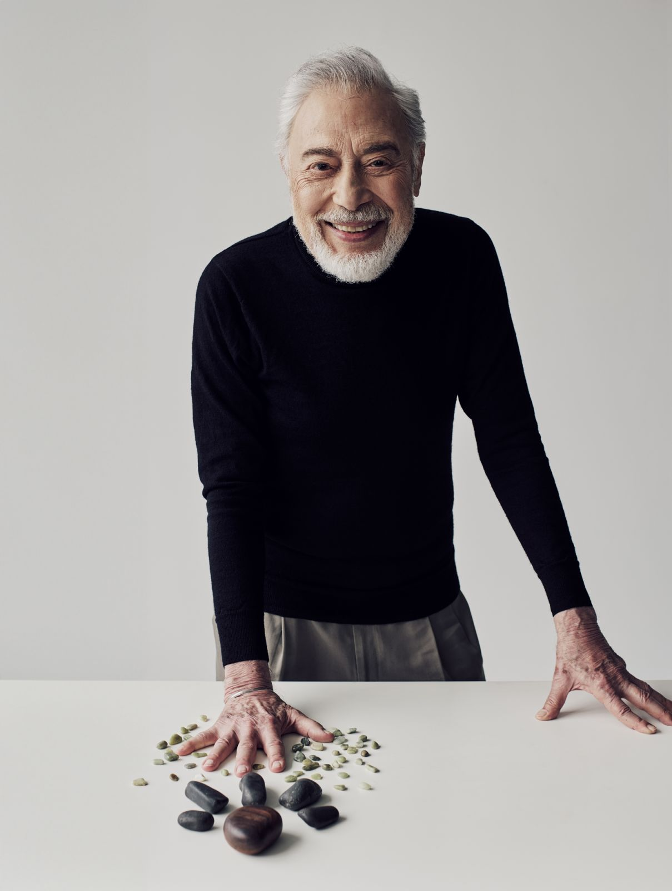

From a Bank Flag to a Worldwide Brand: The Genius of Henry Steiner
Few corporate logos have stood the test of time as successfully as the HSBC hexagon, designed by Henry Steiner in 1983. Often called the “Father of Hong Kong Graphic Design,” Steiner created a symbol that blended history, simplicity, and global relevance.

The logo was inspired by HSBC’s historic house flag, which featured a distinctive red-and-white geometric pattern. Steiner transformed this heritage element into the now-famous hexagon, creating a modern identity that could be recognised around the world.

The design also contains subtle references to the Cross of Saint Andrew, reflecting the Scottish roots of the bank’s founder. Steiner described the symbol as representing trade, communication, and connections between East and West.

Built from simple geometric shapes, the logo works across every medium, from bank cards to skyscrapers.
More than four decades later, the HSBC hexagon remains largely unchanged, demonstrating the power of thoughtful, timeless design.


Even if you think you don’t know Henry Steiner, if you live in Hong Kong, you know his work. The nonagenarian is known as the “father of Hong Kong design”: he is responsible for the HSBC hexagon, the Hong Kong Land “H”, the Jockey Club logo and the emblem on Standard Chartered banknotes, among other everyday sights.
The Vienna-born designer, who lived in the United States and studied at Yale University under the esteemed designer Paul Rand, moved to Hong Kong in 1961, and established his consultancy, Steiner&Co, in 1964.

To celebrate his six decades of work in the city, visual art museum M+ hosted Henry Steiner: The Art of Graphic Communication, a retrospective of his work, in 2024, demonstrating the development of not only Steiner’s style and confidence but also the significance of graphic design in Hong Kong’s visual culture.